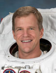

Lyndon B. Johnson Space Center
Houston, Texas 77058
|
National Aeronautics and Space Administration Lyndon B. Johnson Space Center Houston, Texas 77058 |
 |
Biographical Data |
||
Scott E. Parazynski (M.D.)
NASA Astronaut (FORMER)
PERSONAL DATA: Born July 28, 1961, in Little Rock, Arkansas. He has two beautiful children. He enjoys mountaineering, rock climbing, flying, scuba diving, skiing, travel, woodworking and nature photography. A commercial, multi-engine seaplane and instrument-rated pilot, Dr. Parazynski has logged more than 2,500 flight hours in a variety of aircraft. As a mountaineer, he has scaled major mountains in the Alaska Range, the Cascades, the Rockies, the Andes and the Himalayas. His summits include Cerro Aconcagua (22,841 feet above sea level) and all 59 of Colorado’s peaks that are more than 14,000 feet in altitude. After failing to reach the summit of Mount Everest (29,035 feet) in 2008, due to a severe back injury, on May 20, 2009, he became the first astronaut to stand on top of the world.
EDUCATION: Attended junior high school in Dakar, Senegal, and Beirut, Lebanon. Attended high school at the Tehran American School, Iran, and the American Community School, Athens, Greece, graduating in 1979. He received a Bachelor of Science degree in Biology from Stanford University in 1983, continuing on to graduate with honors from Stanford Medical School in 1989. He served his medical internship at the Brigham and Women’s Hospital of Harvard Medical School (1990). He had completed 22 months of a residency program in emergency medicine in Denver, Colorado, when he was selected for the astronaut corps.
ORGANIZATIONS: Fellow of the Aerospace Medical Association and the Explorers Club. Member of the American Society for Gravitational and Space Biology, the Wilderness Medical Society, the American Alpine Club, the Association of Space Explorers and the Aircraft Owners and Pilots Association. Chairman of the Board of the Challenger Center for Space Science Education and Trustee of the Houston Museum of Natural Science.
SPECIAL HONORS: National Institutes of Health Predoctoral Training Award in Cancer Biology (1983); Rhodes Scholarship finalist (1984); NASA Graduate Student Researcher’s Award (1988); Stanford Medical Scholars Program (1988); Research Honors Award from Stanford Medical School (1989); NASA-Ames Certificate of Recognition (1990); Wilderness Medical Society Research Award (1991); Space Station Team Excellence Award (1996); Vladimir Komarov Diploma from the Fédération Aéronautique Internationale (1995, 1999); NASA Exceptional Service Medals (1998, 1999); NASA Space Flight Medals (1994, 1997, 1998, 2001, 2007); NASA Distinguished Service Medals (2002, 2009); Ellis Island Family Heritage Award (2005); Flight Achievement Award from the American Astronomical Association (1998, 2008); Aviation Week Laureate Award (2008); Lowell Thomas Award from the Explorers Club (2008); Randolph C. Lovelace Award from the Society of NASA Flight Surgeons (2008); Arkansas Aviation Hall of Fame (2008); National Eagle Scout Association Outstanding Eagle Award (2012).
While in medical school, Dr. Parazynski competed on the United States Development Luge Team and was ranked among the top 10 competitors in the nation during the 1988 Olympic Trials. He also served as an Olympic Team Coach for the Philippines during the 1988 Olympic Winter Games in Calgary, Canada, and later, as Honorary Captain of the United States Olympic Luge Team during the 2010 Olympic Winter Games in Vancouver, Canada.
EXPERIENCE: While an undergraduate at Stanford University, Dr. Parazynski studied antigenic variation in African Sleeping Sickness, using sophisticated molecular biological techniques. While in medical school, he was awarded a NASA Graduate Student Fellowship and conducted research at NASA-Ames Research Center on fluid shifts that occur during human spaceflight. Additionally, he has been involved in the design of several exercise devices that are being developed for long-duration spaceflight, and he has conducted research on high-altitude acclimatization. Dr. Parazynski has numerous publications in the field of space physiology and has a particular expertise in human adaptation to stressful environments. He has also invented a number of medical devices and other technologies for life in extreme environments.
NASA EXPERIENCE: Selected as an astronaut in March 1992, Dr. Parazynski reported to the Johnson Space Center in August 1992. He completed one year of training and evaluation and was qualified as a mission specialist. Dr. Parazynski initially served as one of the crew representatives for Extravehicular Activity (EVA) in the Astronaut Office Mission Development Branch. Following his first flight, he was assigned as a backup for the third American long-duration stay aboard Russia’s Space Station Mir and was expected to serve as a prime crew member on a subsequent mission. He spent five months in training at the Gagarin Cosmonaut Training Center, Star City, Russia. In October 1995, when sitting-height parameters raised concerns about his fitting safely in the Soyuz vehicle in the event of an emergency aboard the Mir station, he was deemed too tall for the mission and was withdrawn from Mir training. He has served as the Astronaut Office crew representative for space shuttle, space station and Soyuz training, as Deputy (Operations and Training) of the Astronaut Office ISS Branch, and as Chief of the Astronaut Office EVA Branch. In the aftermath of the Columbia tragedy, he was the Astronaut Office lead for space shuttle thermal protection system inspection and repair. A veteran of five spaceflights, STS-66 (1994), STS-86 (1997), STS-95 (1998), STS-100 (2001) and STS-120 (2007), Dr. Parazynski has logged more than 1,381 hours (over eight weeks) in space, including more than 47 hours during seven spacewalks, and has traveled more than 23 million miles. Dr. Parazynski retired from NASA in March 2009 to work in private industry and to pursue other entrepreneurial and exploration interests.
SPACEFLIGHT EXPERIENCE: The STS-66 Atmospheric Laboratory for Applications and Science-3 (ATLAS-3) mission launched from Kennedy Space Center, Florida, on November 3, 1994, and returned to land at Edwards Air Force Base, California, on November 14, 1994. ATLAS-3 was part of an on-going program to determine the Earth’s energy balance and atmospheric change over an 11-year solar cycle, particularly with respect to humanity’s impact on global-ozone distribution. Dr. Parazynski had responsibility for a number of in-orbit activities, including the operation of the ATLAS experiments and Spacelab Pallet, as well as several secondary experiments in the crew cabin. The crew also successfully evaluated the Interlimb Resistance Device, a free-floating exercise he co-invented to prevent musculoskeletal atrophy in microgravity. Space shuttle Atlantis circled the earth 175 times and traveled more than 4.5 million miles during its 262-hour and 34-minute flight.
STS-86 Atlantis (September 25 to October 6, 1997) was the seventh mission to rendezvous and dock with the Russian Space Station Mir. Highlights of the mission included the exchange of U.S. crew members Mike Foale and David Wolf, the transfer of 10,400 pounds of science and logistics and the first shuttle-based joint American-Russian spacewalk. Dr. Parazynski served as the flight engineer (MS2) during the flight and was also the navigator during the Mir rendezvous. Dr. Parazynski (EV1) and Russian cosmonaut Vladimir Titov performed a five-hour and one-minute spacewalk, during which they retrieved four experiment packages that were first deployed during the STS-76 shuttle-Mir docking mission. They also deployed the Spektr Solar Array Cap, which was designed to be used in a future Mir spacewalk to seal a leak in the Spektr module’s damaged hull. Other objectives of spacewalk included the evaluation of common spacewalk tools to be used by astronauts wearing either Russian- or American-made spacesuits, and a systems flight test of the Simplified Aid for EVA Rescue (SAFER). Space shuttle Atlantis circled the earth 169 times and traveled more than 4.2 million miles during its 259-hour and 21-minute flight.
STS-95 Discovery (October 29 to November 7, 1998) was a nine-day mission, during which the crew supported a variety of research payloads, including the deployment of the Spartan solar-observing spacecraft and the testing of the Hubble Space Telescope Orbital Systems Test Platform. The crew also conducted investigations on the correlation between spaceflight and the aging process. Dr. Parazynski was the flight engineer (MS2) for the mission as well as the navigator for the Spartan spacecraft rendezvous. During the flight, he also operated the shuttle’s robotic arm in support of the testing of several space-vision systems being considered for station assembly. In addition, he was responsible for monitoring several life sciences investigations, including those involving crewmate Senator John Glenn. The mission was accomplished in 134 Earth orbits, traveling 3.6 million miles in 213 hours and 44 minutes.
STS-100 Endeavour (April 19 to May 1, 2001) was the ninth mission to the International Space Station, during which the crew successfully delivered and installed the space station “Canadarm2” robotic arm, to be used for all future space station assembly and maintenance tasks. Dr. Parazynski conducted two spacewalks with Canadian colleague, Chris Hadfield, to assemble and power the next-generation robotic arm. Additionally, the pair installed a new UHF radio antenna for space‑to‑space communications during space shuttle rendezvous and station spacewalk activity. A critical in-orbit spare, a direct current switching unit, was also transferred to the space station during the 14-hour and 50-minute spacewalk. Also during the flight, Dr. Parazynski operated Endeavour's robotic arm to install, and later remove, the Italian-built “Raffaello” Multi-Purpose Logistics Module. Traveling 4.9 million miles in 283 hours and 30 minutes, the mission was accomplished in 186 Earth orbits.
STS-120 Discovery (October 23 to November 7, 2007) launched from and returned to land at Kennedy Space Center. During the mission, the Node 2 module named “Harmony” was delivered to the International Space Station. This element opened up the capability for future international laboratories to be added to the station. Dr. Parazynski served as EV1 (lead spacewalker) and accumulated more than 27 hours in four spacewalks. One of the major spacewalk mission objectives was the relocation of the P6 solar array from the top of the Z1 truss to the end of the port side of the integrated truss structure. During the IVA-commanded redeploy of the solar array, several array panels snagged and were damaged, requiring an unplanned spacewalk to successfully repair the array. The mission was accomplished in 238 orbits, traveling 6.2 million miles in 15 days, two hours, and 23 minutes.
OCTOBER 2012
This is the only version available from NASA. Updates must be sought direct from the above named individual{kind=link}